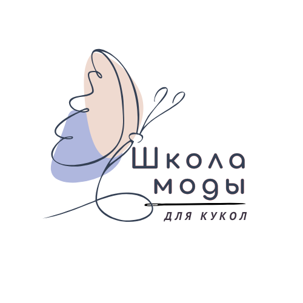
Школа модыдля куколОльга Кирсанова
Когда-то мои куклы носили те наряды, о которых
мечтала я сама
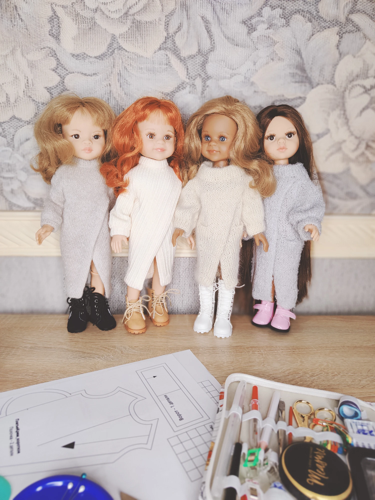
которые хочется
прожить
Сегодня я так же придумываю для них капсулы, силуэты и образы — только теперь это настоящая мода в масштабе 1:5.
Здесь важна каждая деталь: ткань, пропорции, посадка, сочетания. Лён, трикотаж, войлок — и взгляд стилиста на маленькие вещи.
Хотите так же?
Начните с бесплатного мастер-класса по валенкам — и своими руками создайте первую стильную деталь для образа Паолы.
Бесплатный мастер-класс
Валенки из кота
Эти маленькие валенки я сделала из шерсти своего кота. Но можно использовать и другую шерсть — кот для этого мастер-класса необязателен.
Для куклы, на ёлку или к подарку — выбирайте, для чего будет ваша пара. В трёх частях мастер-класса показываю мокрое валяние без игл. Уроки можно посмотреть или скачать.
Открыть мастер-классБесплатно, без подписки. Материалы на Google Диске.
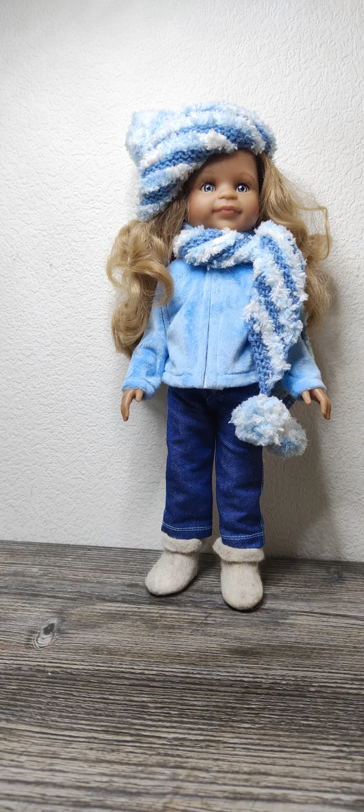
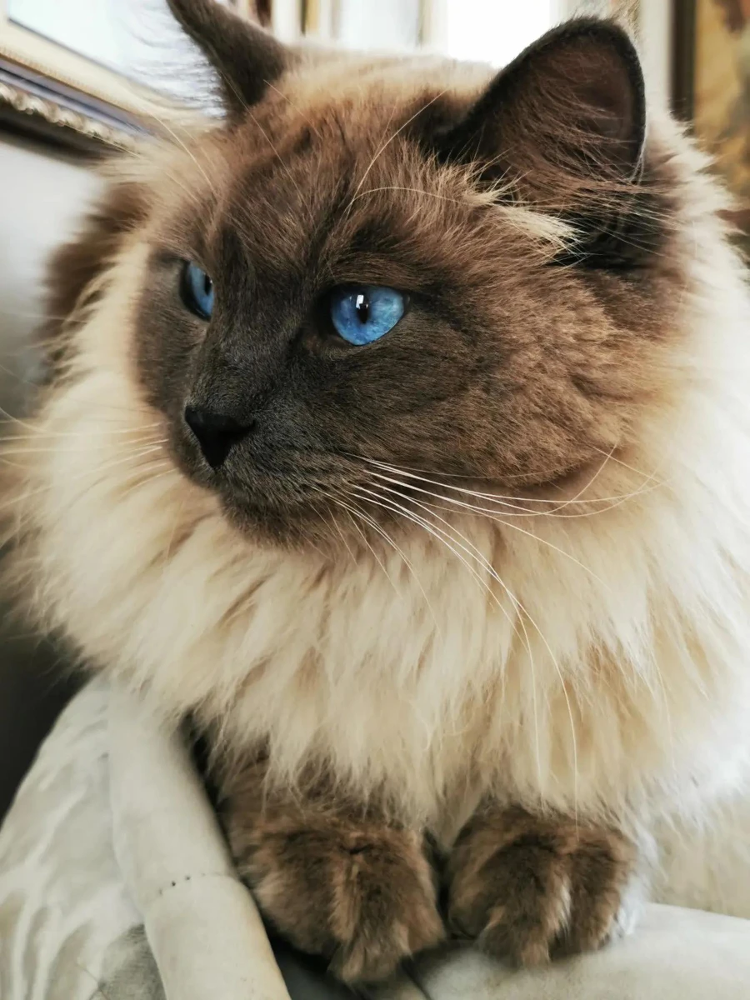
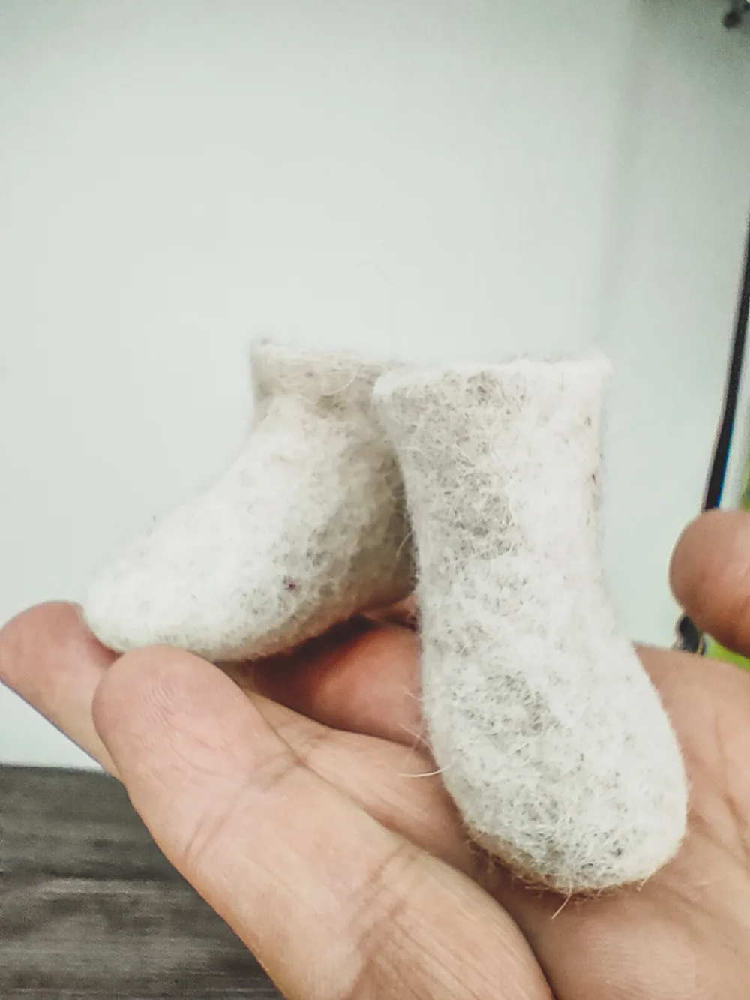
Обо мне
С детства я шила и вязала куклам наряды, которые не могла позволить себе. Начала в четыре года с вышивки крестиком, а к семи связала первый костюм для пупса.
Со временем поняла: самый интересный результат получается, когда смешиваешь разные техники. И до сих пор ношу одежду, которую создала сама.
Опыт работы над интерьерными куклами вдохновляет меня создавать не разрозненные предметы гардероба, а законченные образы — пусть и в кукольном размере.
Теперь придумываю наряды для Паолы и делюсь своими находками в мастер-классах.
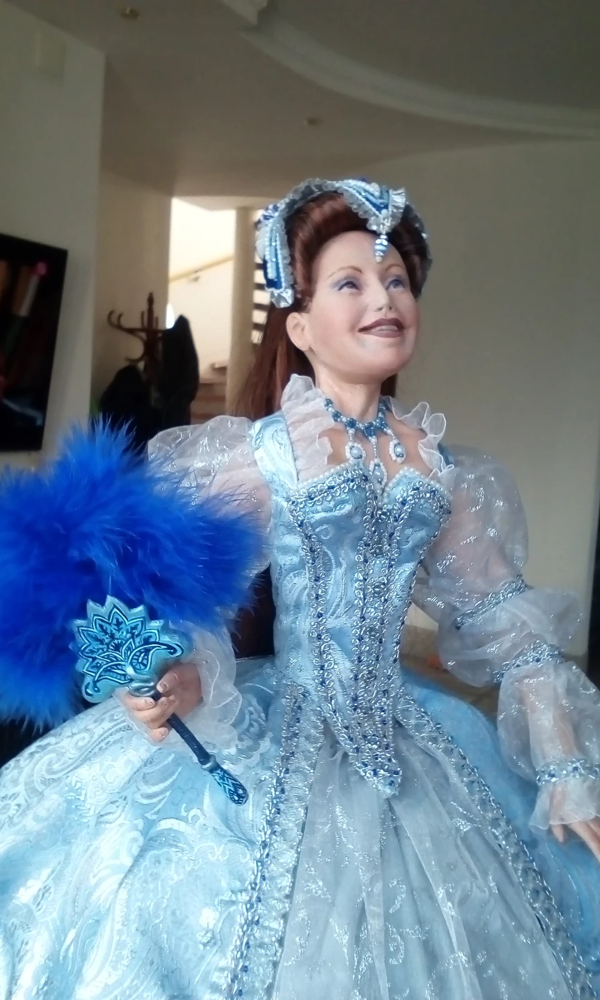
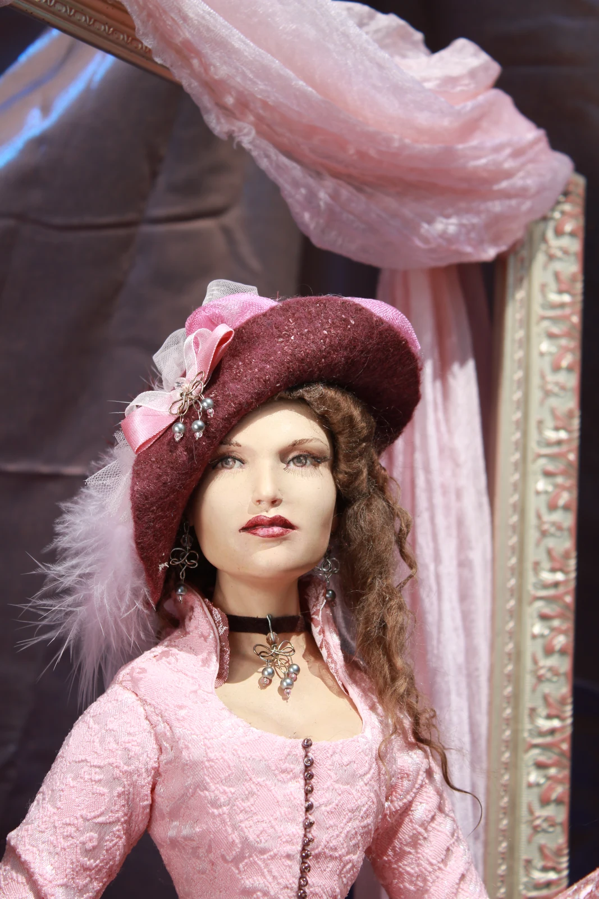
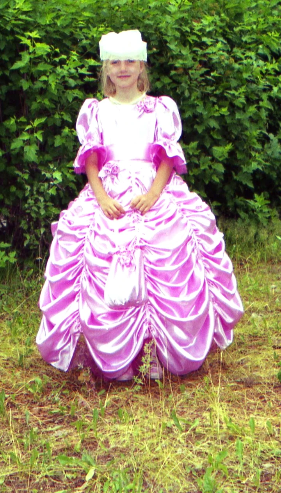
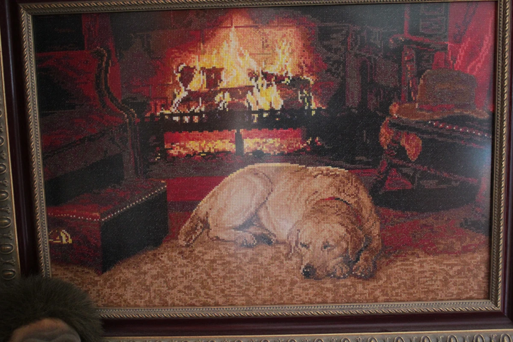
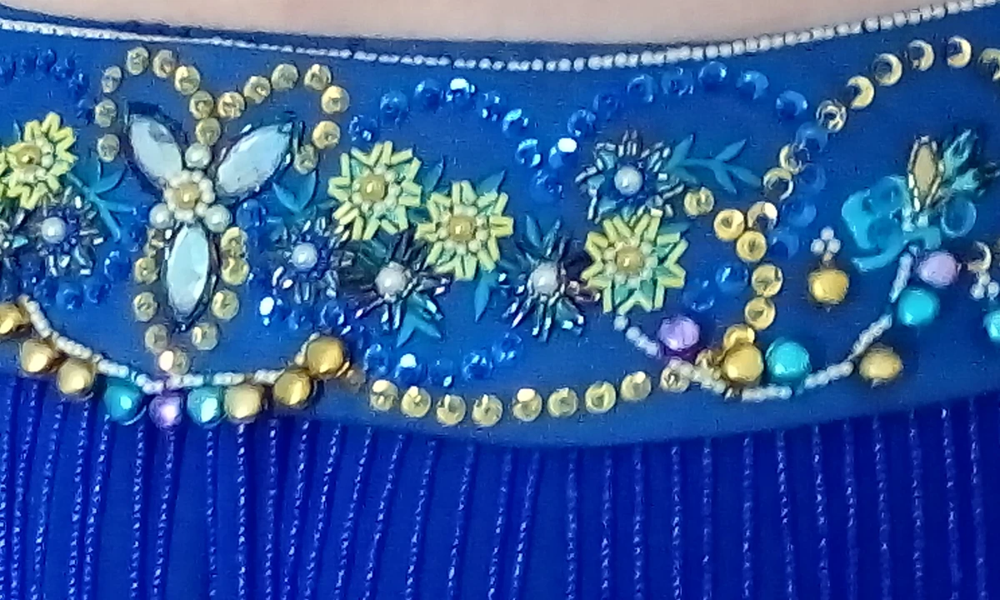
Какой образ создадим следующим?
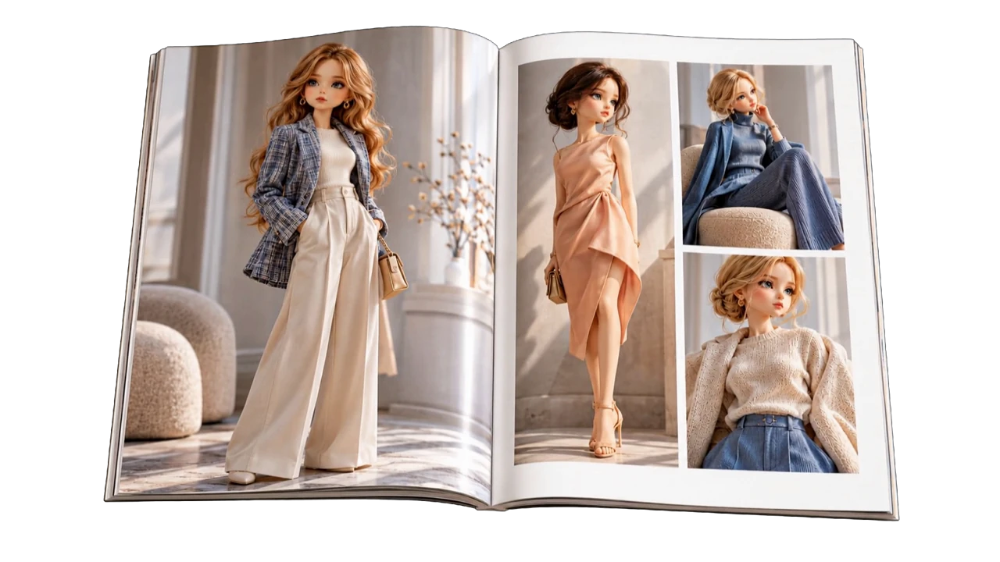
Мастер-классы по созданию кукольных нарядов — выбирайте то, что хочется попробовать.